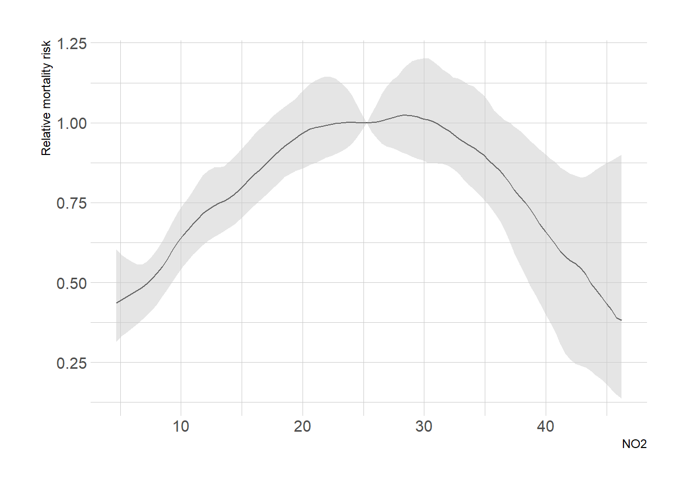

SHARP Bayesian Modeling for Environmental Health Workshop
Author
Robbie M. Parks, Garyfallos Konstantinoudis
Published
August 22, 2024
Goal of this computing lab session
This goal of this lab is to use NIMBLE to carry out an exposure-response regression in a variety of ways.
What’s going to happen in this lab session?
During this lab session, we will build:
Linear exposure-response regression;
Piecewise linear exposure-response regression; and
Non-linear exposure-response regression.
Introduction
We will build on and extend the previous lab the COVID-19 deaths during March-July 2020, in England, at the LTLA geographical level (317 areas), as taken from the published paper:
Konstantinoudis G, Padellini T, Bennett JE, Davies B, Ezzati M, Blangiardo M. Long-term exposure to air-pollution and COVID-19 mortality in England: a hierarchical spatial analysis. Environ Int. 2021 Jan:146:106316. doi: 10.1016/j.envint.2020.106316. PMID: 33395952 PMCID: PMC7786642
For that analysis, we included 38,573 COVID-19 deaths up to June 30, 2020 at the Lower Layer Super Output Area level in England (\(n = 32844\) small areas). We retrieved averaged NO\(_2\) concentration during 2014-2018 from the Pollution Climate Mapping. We used Bayesian hierarchical models to quantify the effect of air pollution while adjusting for a series of confounding and spatial autocorrelation.
We will build simple Bayesian models to try to understand what is happening in the data. Once again we will use NIMBLE as the basis for our Bayesian model writing.
LTLA deaths expectd TtlICUB
Length:316 Min. : 4.0 Min. : 8.287 Min. :0.000e+00
Class :character 1st Qu.: 77.0 1st Qu.: 99.339 1st Qu.:8.548e-05
Mode :character Median : 117.5 Median :129.067 Median :8.092e-03
Mean : 155.6 Mean :155.630 Mean :1.399e-02
3rd Qu.: 191.2 3rd Qu.:177.896 3rd Qu.:1.460e-02
Max. :1226.0 Max. :903.219 Max. :1.911e-01
NO2 IMD geometry
Min. : 4.48 Min. :1.000 MULTIPOLYGON :316
1st Qu.:11.09 1st Qu.:2.000 epsg:27700 : 0
Median :13.96 Median :3.000 +proj=tmer...: 0
Mean :15.05 Mean :2.997
3rd Qu.:17.26 3rd Qu.:4.000
Max. :46.45 Max. :5.000
class(data_england)
[1] "sf" "tbl_df" "tbl" "data.frame"
# use the code below to simplify the geometry and speed up plotting and other oprtationsdata_england_simpler <- data_england #rgeos::gSimplify(as(data_england, "Spatial"), tol = 500)data_england_simpler <-st_as_sf(data_england_simpler)data_england_simpler <-cbind(data_england_simpler, data_england %>%mutate(geometry =NULL))data_england <- data_england_simpler
The following code subsets the data to London so the models are quicker to run. We’re going to run the models for London, then load in the samples for England (and pretend we ran for England!).
# Obtain the number of LTLAsn.LTLA <-nrow(data_england)n.LTLA
[1] 316
Adjacency matrix in R
Convert the polygons to a list of neighbors using the function poly2nb()
LTLA_nb <-poly2nb(pl = data_england)LTLA_nb
Neighbour list object:
Number of regions: 316
Number of nonzero links: 1610
Percentage nonzero weights: 1.612322
Average number of links: 5.094937
1 region with no links:
44
2 disjoint connected subgraphs
Convert the list you defined previously to NIMBLE format (i.e. a list of 3 components adj, num and weights) using the function nb2WB() and print a summary of the object.
nbWB_A <-nb2WB(nb = LTLA_nb)names(nbWB_A)
[1] "adj" "weights" "num"
1. Linear exposure-response regression
Let \(\mathcal{D}\) be the observation window of England and \(A_1, A_2, \dots, A_N\) a partition denoting the LTLAs in England with \(\cup_{i=1}^NA_i = \mathcal{D}\) and \(A_i\cap A_j\) for every \(i\neq j\). Let \(O_1, O_2, \dots, O_N\) be the observed number of COVID-19 deaths occurred during March-July 2020 in England, \(E_1, E_2, \dots, E_N\) is the expected number of COVID-19 deaths and \(\lambda_1, \lambda_2, \dots, \lambda_N\) the standardized mortality ratio (recall \(\lambda_i = \frac{O_i}{E_i}\)). A standardized mortality ratio of \(1.5\) implies that the COVID-19 deaths we observed in the \(i\)-th area are \(1.5\) times higher to what we expected. Under the Poisson assumption we have:
the terms \(\beta_1 X_{1i} + \beta_2 X_{2i} + \sum_{j=2}^5\beta_{3j} X_{3i}\), where \(X_{1i}, X_{2i}, X_{3i}\) are the ICU beds, NO\(_2\) and IMD in the \(i\)-th LTLA, \(\beta_1, \beta_2, \sum_{j=2}^5\beta_{3j}\) the corresponding effects and \(\exp(\beta_1), \exp(\beta_2)\) the relative risk of ICU beds or NO\(_2\) for every unit increase and of the ICU beds or NO\(_2\). For instance \(\exp(\beta_2) = 1.8\) means that for every unit increase of long term exposure to \(NO_2\), the risk (read standardized mortality ratio) of COVID-19 deaths cancer increases by \(80\%\). \(exp(\beta_{32}), \beta_{33}, \beta_{34}, \beta_{35}\) are the relative risks compared to the baseline IMD category, ie the most deprived areas. An \(exp(\beta_{35}) = 0.5\) means that the risk of COVID-19 deaths in most affluent areas decreases by \(50%\) compared to the most deprived areas. We will first write the model in NIMBLE.
BYMecoCode <-nimbleCode({# priors alpha ~dflat() # vague prior (Unif(-inf, +inf)) overallRR <-exp(alpha) # overall RR across study region tau.theta ~dgamma(0.5, 0.05) # prior for the precision hyperparameter sigma2.theta <-1/ tau.theta # variance of unstructured area random effects tau.phi ~dgamma(0.5, 0.0005) # prior on precison of spatial area random effects sigma2.phi <-1/ tau.phi # conditional variance of spatial area random effectsfor (j in1:K) { beta[j] ~dnorm(0, tau =1) RR.beta[j] <-exp(beta[j]) } RR.beta1_1NO2 <-exp(beta[1] / sd.no2) # get per 1 unit increase in the airpollution (scale back)# ICAR prior# theta + phi is BYM phi[1:N] ~dcar_normal(adj = adj[1:L], weights = weights[1:L], num = num[1:N], tau = tau.phi, zero_mean =1)# likelihoodfor (i in1:N) { O[i] ~dpois(mu[i]) # Poisson likelihood for observed countslog(mu[i]) <-log(E[i]) + alpha + theta[i] + phi[i] +inprod(beta[], X[i, ])# the inprod is equivalent to beta[1]*X1[i] + beta[2]*X2[i] + beta[3]*X32[i] + beta[4]*X33[i] + beta[5]*X34[i] + beta[6]*X35[i] SMR[i] <- alpha + theta[i] + phi[i] +inprod(beta[], X[i, ]) theta[i] ~dnorm(0, tau = tau.theta) # area-specific RE resRR[i] <-exp(theta[i] + phi[i]) # area-specific residual RR proba.resRR[i] <-step(resRR[i] -1) # Posterior probability }})
Create data object as required for NIMBLE.
n.LTLA <-dim(data_england)[1]# create the dummy columns for deprivationdata_england <- data_england |>mutate(IMD =as_factor(IMD)) |>mutate(as.data.frame(model.matrix(~0+ IMD, data =pick(everything()))))# matrix of covariatesXmat <-cbind(scale(data_england$NO2)[, 1],scale(data_england$TtlICUB)[, 1], data_england$IMD2, data_england$IMD3, data_england$IMD4, data_england$IMD5)# Format the data for NIMBLE in a listcovid_data <-list(O = data_england$deaths, # observed nb of deathsX = Xmat # covariates)# number of total covariatesK <-ncol(Xmat)covid_constants <-list(N = n.LTLA, # nb of LTLAsK = K, # number of covariatessd.no2 =sd(data_england$NO2), # standard deviation of NO2# adjacency matrixL =length(nbWB_A$weights), # the number of neighboring areasE = data_england$expectd, # expected number of deathsadj = nbWB_A$adj, # the elements of the neighbouring matrixnum = nbWB_A$num,weights = nbWB_A$weights)
Create the initial values for ALL the unknown parameters:
# initialise the unknown parameters, 2 chainsinits <-list(list(alpha =0.01,beta =rep(0, K),tau.theta =10,tau.phi =1,theta =rep(0.01, times = n.LTLA),phi =c(rep(0.5, times = n.LTLA)) ),list(alpha =0.5,beta =rep(-1, K),tau.theta =1,tau.phi =0.1,theta =rep(0.05, times = n.LTLA),phi =c(rep(-0.05, times = n.LTLA)) ))
Which model parameters do you want to monitor? Set these before running NIMBLE. Call this object parameters_to_monitor.
The effect by unit increase in the long term exposure to NO\(_2\) is RR.beta1_1NO2:
# as relative risk per 1 unit increase in the long term NO2 exposuremodelBYMeco.sim$summary$all.chains[paste0("RR.beta1_1NO2"), c("Median", "95%CI_low", "95%CI_upp")]
Median 95%CI_low 95%CI_upp
1.028572 1.017857 1.039881
# as percentage increase in mortality for 1 unit increase in the long term NO2 exposure(modelBYMeco.sim$summary$all.chains[paste0("RR.beta1_1NO2"), c("Median", "95%CI_low", "95%CI_upp")] -1) *100
Median 95%CI_low 95%CI_upp
2.857227 1.785713 3.988086
2. Piecewise linear exposure-response regression
We now include a piecewise linear effect for the exposure. We do this through the covariate effects \(\beta X_{i}\). Specifically, the first two covariates, governed by \(\beta_1\) and \(\beta_2\), now represent the increase in mortality for low and high concentrations of NO\(_2\). We do this through the design of the covariate matrix \(X\): we create an indicator variable \(X_{1i}\) which is 1 below average NO\(_2\) values and 0 above, and an indicator variable \(X_{2i}\) which is 0 below average NO\(_2\) values and 1 above.
BYMecoPWCode <-nimbleCode({# priors alpha ~dflat() # vague prior (Unif(-inf, +inf)) overallRR <-exp(alpha) # overall RR across study region tau.theta ~dgamma(0.5, 0.05) # prior for the precision hyperparameter sigma2.theta <-1/ tau.theta # variance of unstructured area random effects tau.phi ~dgamma(0.5, 0.0005) # prior on precison of spatial area random effects sigma2.phi <-1/ tau.phi # conditional variance of spatial area random effectsfor (j in1:K) { beta[j] ~dnorm(0, tau =1) RR.beta[j] <-exp(beta[j]) }# ICAR prior phi[1:N] ~dcar_normal(adj = adj[1:L], weights = weights[1:L], num = num[1:N], tau = tau.phi, zero_mean =1) RR.beta1_1NO2_low <-exp(beta[1] / sd.no2) # get per 1 unit increase in the air pollution for low concentrations (scale back) RR.beta1_1NO2_high <-exp(beta[2] / sd.no2) # get per 1 unit increase in the air pollution for high concentrations (scale back)# likelihoodfor (i in1:N) { O[i] ~dpois(mu[i]) # Poisson likelihood for observed countslog(mu[i]) <-log(E[i]) + alpha + theta[i] + phi[i] +inprod(beta[], X[i, ]) SMR[i] <- alpha + theta[i] + phi[i] +inprod(beta[], X[i, ]) theta[i] ~dnorm(0, tau = tau.theta) # area-specific RE resRR[i] <-exp(theta[i] + phi[i]) # area-specific residual RR proba.resRR[i] <-step(resRR[i] -1) # Posterior probability }})
Create data object as required for NIMBLE, this time incorporating a piecewise structure for \(NO_2\) using indicator variables.
n.LTLA <-dim(data_england)[1]# create the dummy columns for deprivationdata_england <- data_england |>mutate(IMD =as_factor(IMD)) |>mutate(as.data.frame(model.matrix(~0+ IMD, data =pick(everything()))))NO2_low =ifelse(scale(data_england$NO2)[, 1] >0,0,scale(data_england$NO2)[, 1])NO2_high =ifelse(scale(data_england$NO2)[, 1] <0,0,scale(data_england$NO2)[, 1])# matrix of covariatesXmat <-cbind( NO2_low, NO2_high,scale(data_england$TtlICUB)[, 1], data_england$IMD2, data_england$IMD3, data_england$IMD4, data_england$IMD5)# Format the data for NIMBLE in a listcovid_data <-list(O = data_england$deaths, # observed nb of deathsX = Xmat # covariates)# number of total covariatesK <-ncol(Xmat)covid_constants <-list(N = n.LTLA, # nb of LTLAsK = K, # number of covariatessd.no2 =sd(data_england$NO2), # standard deviation of NO2# adjacency matrixL =length(nbWB_A$weights), # the number of neighboring areasE = data_england$expectd, # expected number of deathsadj = nbWB_A$adj, # the elements of the neighbouring matrixnum = nbWB_A$num,weights = nbWB_A$weights)
Create the initial values for ALL the unknown parameters:
# initialise the unknown parameters, 2 chainsinits <-list(list(alpha =0.01,beta =rep(0, K),tau.theta =10,tau.phi =1,theta =rep(0.01, times = n.LTLA),phi =c(rep(0.5, times = n.LTLA)) ),list(alpha =0.5,beta =rep(-1, K),tau.theta =1,tau.phi =0.1,theta =rep(0.05, times = n.LTLA),phi =c(rep(-0.05, times = n.LTLA)) ))
Which model parameters do you want to monitor? Set these before running NIMBLE. Call this object parameters_to_monitor.
The effect by unit increase in the low concentration long term exposure to NO\(_2\) is RR.beta1_1NO2_low:
# as relative risk per 1 unit increase in the long term NO2 exposure low NO2modelBYMPWeco.sim$summary$all.chains[paste0("RR.beta1_1NO2_low"), c("Median", "95%CI_low", "95%CI_upp")]
Median 95%CI_low 95%CI_upp
1.061455 1.043193 1.081145
# as percentage increase in mortality for 1 unit increase in the long term NO2 exposure low N02(modelBYMPWeco.sim$summary$all.chains[paste0("RR.beta1_1NO2_low"), c("Median", "95%CI_low", "95%CI_upp")] -1) *100
Median 95%CI_low 95%CI_upp
6.145485 4.319283 8.114482
The effect by unit increase in the high concentration long term exposure to NO\(_2\) is RR.beta1_1NO2_high:
# as relative risk per 1 unit increase in the long term NO2 exposure high NO2modelBYMPWeco.sim$summary$all.chains[paste0("RR.beta1_1NO2_high"), c("Median", "95%CI_low", "95%CI_upp")]
Median 95%CI_low 95%CI_upp
1.008064 0.994839 1.020563
# as percentage increase in mortality for 1 unit increase in the long term NO2 exposure high N02(modelBYMPWeco.sim$summary$all.chains[paste0("RR.beta1_1NO2_high"), c("Median", "95%CI_low", "95%CI_upp")] -1) *100
Median 95%CI_low 95%CI_upp
0.8063710 -0.5161047 2.0563096
3. Non-linear exposure-response regression
Linearity of an exposure response relationship is an assumption. It is also worth exploring whether an exposure-response relationship might be non-linear. Here, we will demonstrate that with a random walk of order 2, which is equivalent to a natural spline with equally-spaced knots.
We create the random walk effect using a ICAR prior with pre-specified weights, which are equivalent models. We do this in the weightsRW function below.
BYMecoRW2Code <-nimbleCode({# priors alpha ~dflat() # vague prior (Unif(-inf, +inf)) overallRR <-exp(alpha) # overall RR across study region tau.theta ~dgamma(0.5, 0.05) # prior for the precision hyperparameter sigma2.theta <-1/ tau.theta # variance of unstructured area random effects tau.phi ~dgamma(0.5, 0.0005) # prior on precison of spatial area random effects sigma2.phi <-1/ tau.phi # conditional variance of spatial area random effects tau.b ~dgamma(0.5, 0.0005) # prior on precison of random walk of order 2 sigma2.b <-1/ tau.b # conditional variance of random walk of order 2# ICAR prior phi[1:N] ~dcar_normal(adj = adj[1:L], weights = weights[1:L], num = num[1:N], tau = tau.phi, zero_mean =1)# random walk prior b[1:Jb] ~dcar_normal(adj = adjb[1:Lb], weights = weightsb[1:Lb], num = numb[1:Jb], tau = tau.b, c =2, zero_mean =1)for (j in1:K) { beta[j] ~dnorm(0, tau =1) RR.beta[j] <-exp(beta[j]) }# likelihoodfor (i in1:N) { O[i] ~dpois(mu[i]) # Poisson likelihood for observed countslog(mu[i]) <-log(E[i]) + alpha + theta[i] + phi[i] +inprod(beta[], X[i, ]) + b[Y[i]]# the inprod is equivalent to beta[1]*X1[i] + beta[2]*X2[i] + beta[3]*X32[i] + beta[4]*X33[i] + beta[5]*X34[i] + beta[6]*X35[i] SMR[i] <- alpha + theta[i] + phi[i] +inprod(beta[], X[i, ]) + b[Y[i]] theta[i] ~dnorm(0, tau = tau.theta) # area-specific RE resRR[i] <-exp(theta[i] + phi[i]) # area-specific residual RR proba.resRR[i] <-step(resRR[i] -1) # Posterior probability }})
Define the weights of a random walk of order 2:
weightsRW <-function(Q) { rest.comp <-list()for (i in3:(Q -2)) { rest.comp[[i]] <-c(i -2, i -1, i +1, i +2) } rest.comp <-unlist(rest.comp) adj <-c(2, 3, 1, 3, 4, rest.comp,c(Q -3, Q -2, Q, Q -2, Q -1) ) num <-c(2, 3, rep(4, times =c(Q -4)), 3, 2) weights <-c(c(2, -1, 2, 4, -1),rep(c(-1, 4, 4, -1), times =c(Q -4)),c(-1, 4, 2, -1, 2) )return(list(adj = adj, num = num, weights = weights))}
Create data object as required for NIMBLE, this time processing the \(NO_2\) data to be used in a non-linear model:
n.LTLA <-dim(data_england)[1]# create the dummy columns for deprivationdata_england <- data_england |>mutate(IMD =as_factor(IMD)) |>mutate(as.data.frame(model.matrix(~0+ IMD, data =pick(everything())))) |>mutate( # categories for the exposureN02_id =as.numeric(cut(NO2, breaks =100)) )Jb <- data_england$N02_id |>max()W_weights <-weightsRW(Q = Jb)# matrix of covariatesXmat <-cbind(scale(data_england$TtlICUB)[, 1], data_england$IMD2, data_england$IMD3, data_england$IMD4, data_england$IMD5)# Format the data for NIMBLE in a listcovid_data <-list(O = data_england$deaths, # observed nb of deathsX = Xmat # covariates)# number of total covariatesK <-ncol(Xmat)covid_constants <-list(N = n.LTLA, # nb of LTLAsK = K, # number of covariates# adjacency matrixL =length(nbWB_A$weights), # the number of neighboring areasE = data_england$expectd, # expected number of deathsadj = nbWB_A$adj, # the elements of the neighbouring matrixnum = nbWB_A$num,weights = nbWB_A$weights,# NO2 categories for random walkY = data_england$N02_id,# random walkJb = Jb,Lb =length(W_weights$weights),adjb = W_weights$adj,weightsb = W_weights$weights,numb = W_weights$num)
Create the initial values for ALL the unknown parameters:
# initialise the unknown parameters, 2 chainsinits <-list(list(alpha =0.01,beta =rep(0, K),tau.theta =10,tau.phi =1,theta =rep(0.01, times = n.LTLA),phi =c(rep(0.5, times = n.LTLA)),b =rep(0, times = Jb),sigma2.b =0.1 ),list(alpha =0.5,beta =rep(-1, K),tau.theta =1,tau.phi =0.1,theta =rep(0.05, times = n.LTLA),phi =c(rep(-0.05, times = n.LTLA)),b =rep(0.5, times = Jb),sigma2.b =1 ))
Which model parameters do you want to monitor? Set these before running NIMBLE. Call this object parameters_to_monitor.
# logic to get the first value of the binNO2_bins <- data_england |>pull(NO2) |>cut(100) |>str_sub(2, -2) %>%sub("\\,.*", "", .) |>as.numeric() |>unique() |>sort()# helper function to convert nimble output to one favoured by posterior and bayesplotas_mcmc_obj <- \(x) as_draws_array(as.mcmc.list(lapply(x, as.mcmc)))exposure_posterior <-as_mcmc_obj(modelBYMRW2eco.sim$samples)summarise_draws(exposure_posterior, default_summary_measures()) |>filter(startsWith(variable, "b[")) |>mutate(X =1:100) |>ggplot() +geom_line(aes(x = X, y = median)) +geom_ribbon(aes(x = X, ymin = q5, ymax = q95), fill ="grey80", alpha =0.5) +labs(x ="Normalised NO2", y ="log mortality risk")
We can also show the effect on the relative scale, relative to the risk at 0 concentration. AKIS TO CHECK – NOT SURE WHAT THIS IS MEANT TO SHOW
Warning: Removed 47 rows containing missing values or values outside the scale range
(`geom_line()`).

Closing remarks
Here, we examined the effect of long term exposure to NO\(_2\) on COVID-19 mortality. We fitted several models, with either linear or non-linear models. We fitted a BYM model to account for unknown spatial confounding but in addition we accounted for total number of ICU beds and deprivation per LTLA. We reported evidence of an increased COVID-19 mortality for increasing levels of NO\(_2\).
It should be noted that this model is not fully adjusted, and that the actual analysis from the paper was at a higher resolution and with full adjustment by potential confounders via covariates. The data from that paper is sensitive and cannot be shared publicly. Nevertheless, this lab shows the basic mechanics of how to create linear and non-linear exposure-response analyses in a Bayesian framework.